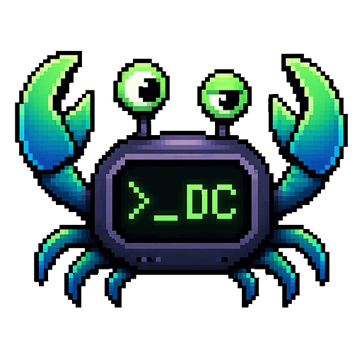
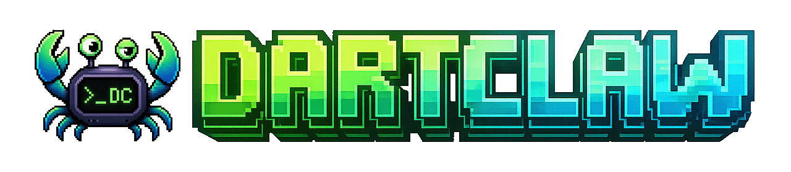

Terminal-aesthetic design system. Catppuccin Mocha/Latte, monospace typography, green accent. See DESIGN.md for full documentation.
Welcome back
.prompt-hero — the typed-glyph greeting, as shipped on the chat landing and the health dashboard.
Chrome, page ground and card are mutually distinct in both themes – and they sit on different rungs per theme, which is why they are their own tokens. Toggle the theme: dark puts chrome below the ground, light puts it above.
Decorative/categorical only — gradients, ambient glows, identicons, data-viz. Never state.
Ordered categorical ramp — assign --chart-1…6 by series index, never hand-picked.
The brand is the 8-bit crab mascot (assets/logo-*-8bit.png); Afterglow is its world rendered as UI. Scarcity doctrine: one claw moment per view.
Always render scaled pixel art with .pixel-art. Never recolor, redraw, or shrink below ~32px.

.identicon .identicon--{1–6} — variant by hash(entityId) % 6 + 1. Entity identity, never state.
.print-in — content prints into place on entry (@starting-style, no JS).
One composite class per named tier — each binds font-size, weight, line-height and letter-spacing together. Apply the class; raw --text-* tokens are for one-offs only.
Uppercase micro-labels compose .tracking-caps on top of .t-caption rather than getting their own tier. There is no 13px tier — it was indistinguishable from the body tier and collapsed into it.
Two column widths. .content-inner is the default reading column; .content-inner--wide is opt-in for data-dense surfaces. The showcase wrap is 1100px, so the wide tier is clipped here — the annotations carry the declared values.
.content-inner — max-width 900px (--container-max, default reading column).content-inner--wide — max-width 1280px (--container-wide, opt-in; rendered clipped to the 1100px showcase wrap)Inside the 900px tier, running prose constrains further to --measure (72ch, ~605px at the 14px body advance). Top-level code blocks and tables are excluded — they keep the full bubble width. Nested inside a list item or blockquote they sit within that block's measure.
.text-gradient — hero titles and brand moments only, max once per view.
.prompt-hero — the typed-glyph greeting for landing and status views; one per view, and it replaces (never joins) a mascot or claw-loader moment. The cursor blinks in steps(); reduced motion pins it visible.
System health
All systems luminous
2 workflows running · 12 sessions active · guards armed
8 card types, each with a distinct purpose. Choose by intent, not visual preference.
Elevation controls visual weight. State communicates selection.
.card.card-glass — translucent + backdrop blur. Only over live content (modals, command palettes, toasts). Left half sharp, right half through the glass.
Left-border accent + gradient bleed. "This content has a level."
rm -rf /. InputSanitizer.Inner glow on hover matches semantic color.
Background shifts toward semantic color on hover. For categorized lists.
Maximum emphasis. Active tasks, hero cards, urgent items.
.card-header-actions — trailing slot; the header without it renders exactly as above.
Lightweight recessed containers. No hover, no semantics. Wells nest freely.
.well — Standard grouping
.well-deep — Code/terminal output
$ dart run dartclaw_cli:dartclaw serve
Listening on http://localhost:3000.terminal-frame — terminal as an object: title bar + traffic dots + recessed body. Plain output stays .well-deep.
$ dartclaw serve --config production.yaml
✓ Storage initialized (.dartclaw/)
✓ 2 channels connected
Listening on http://localhost:3000$ dartclaw replay 47
> [06:32:01] task started: digest
✓ [06:32:14] 12 messages summarized
done.--crt modifier: scanlines + vignette. Hero/replay terminals only — one per view.
.well-content — Roomier. Message threads, form sections.
export function verifyToken(req, res, next) {
const token = req.headers.authorization?.split(' ')[1];
}Done.
well-content > card panel-accent > well + well-deep
+ import { verify } from 'jsonwebtoken';
+ export function jwtMiddleware(req, res, next) {
+ verify(token, process.env.JWT_SECRET);
+ }Animated loading indicator (varies by width):
.meter + .meter-fill[--color] — budget consumption, turn progress. Always pair with a visible label.
.meter, reads as a solid rule.meter--empty.skeleton / .skeleton-text — initial loads, shaped like the eventual content.
.status-badge-muted — the neutral disabled/unavailable treatment. No semantic hue, no animation; pairs with the existing .status-dot--idle, not a dot variant of its own.
Motion is rationed: only --live (working) and --attention (needs you) pulse. Every attention treatment also carries a text cue.
Structured, disclosure-enabled record of a tool invocation — the timeline sibling of the .tool-indicator line. State on the left edge and name glyph; expand for args/result. Built on <details> (zero-JS).
{"file_path": "packages/dartclaw_core/lib/harness.dart"}abstract class Harness {
Future<void> start();
Stream<HarnessEvent> events();
}{"command": "dart test -t integration"}States: --success (expanded) · --pending (scan sweep) · --error (name reddens) · --blocked (shield + guard verdict).
The plan-approval / HITL gate as a first-class object — governance rendered as UX. The dot pulses; the card doesn't.
Proposed plan
Neutral reference/content tokens for the composer and metadata rows. They reference things; they never carry state.
.msg-thinking — the claw moment of the chat view. Replaced by streamed content on the first token; at most one per view.
Attention-center rows in a .card-glass panel. Unread carries an accent left edge + tint.
Rows inside the glass palette. --active is the keyboard cursor (accent edge + surface).
Run-board cards and the workflow pipeline spine. Composition-first — a .card with an attention ring, and an <ol> step list.
.btn-secondary is the orchestration action (run workflow, open studio) — info-tinted fill and ring between primary (create) and danger (destroy).
.btn-sm / .btn-icon-sm differ by padding and min-height only — neither declares a font-size. .btn-danger-fill is the committed destructive step; outlined .btn-danger stays the default.
Resting boundary holds ≥3:1 (WCAG 1.4.11) against the card plane and the page ground, in both themes — identifiable without hovering.
.cardkbd / .kbd — keyboard shortcuts in help text and command hints.
Press ⌘ K to open the command palette, Esc to dismiss, Shift+Enter for a newline.
Every control is a native element under a canonical class. Control rules are element-qualified (input.form-input), declare no font-size, and compose .t-label / .t-caption for their type tier.
claude/opus.
<select> with the DartClaw chevron — no browser-default arrow.
.form-input--num (12ch) and .form-input--short (32ch) cap rather than set, so an unmodified field in the same .form-row still fills its column.
The boundary is never the whole signal — an invalid control always renders its .form-error. [aria-invalid="true"] and :user-invalid are equivalent hooks, and the error boundary survives :focus-visible.
CSS-only on native inputs — state comes from :checked, never JavaScript.
.form-field--inline)One tab component. The bar scrolls on a single line and signals its own overflow; it never wraps. Active state is keyed on both .active and aria-selected="true".
Second bar carries a .tabs-actions slot — pushed right while the bar fits, directly after the last tab once it overflows.
.tabs--sticky — translucent over the page ground rather than a flat slab, so it reads as part of the plane it pins to. Scroll the box.
This bar carries only the .active class — the four-tab bar above carries only aria-selected. Each hook is proven on its own.
Scroll this box: the bar pins to the top and the content passes behind it.
The fill is a tint of the ground token plus a backdrop blur, so it has no hard edge against the body gradient in either theme.
An opaque slab is the defect this replaces — it lands as a visible rectangle wherever the ambient wash differs from the fixed colour.
More content, so there is something to scroll.
More content.
More content.
End of the scrolled region.
.list-toolbar — the search field takes the slack, actions keep their width, the row stacks rather than crushing the input. .pager renders plain .btn.btn-ghost controls around a .pager-label.
Severity never rides on colour alone: each variant carries its own glyph as well as its edge hue, so the set stays readable in greyscale and for colour-blind users. showToast() passes its type through unvalidated, so an unrecognised variant falls back to the info glyph rather than rendering an empty box.
Raised live they stack bottom-right in .toast-container, which sits at --z-toast — the top of the stacking ladder.
One frame shape for every modal: dialog + its applicable width modifier + card card-glass. The family supplies the width contract, the ::backdrop scrim and the header / body / footer split; colour and material come from the card. The frame carries no z-index — showModal() promotes it into the browser top layer, above every tier of the ladder.
The two confirmations below are the same .dialog--confirm frame. Danger is a markup choice, not a variant: destructive adds the triangle-alert glyph and a .btn-danger-fill confirm, non-destructive has neither.
The structured-input demo wraps its sections in a <form>, as every submitting dialog does. The three-part split has to survive that wrapper — without the .dialog > form pass-through the form becomes the frame's only flex item, the body stops absorbing the squeeze and the footer is clipped out of reach.
.delete-confirm-bar — a delete that belongs to one row confirms in place, so the row stays visible as its own context. A modal here would hide the thing being deleted behind the question about deleting it.
.input-area is the anchored strip (gradient + top highlight); .composer is the input object it holds — textarea on top, toolbar inside, focus ring on the container. The bare textarea + Send layout is superseded for chat.
.input-area alone remains the anchored strip; a mode is a .status-badge (neutral / --warning when elevated — never a chip), and refs are chips in .composer-context or a .chip-row above the toolbar.
.empty-state-title carries the headline at --fg, so the panel no longer needs an inline colour override on its <strong>.
No sessions yet
Create a new session to start chatting.
The lighter shape for panel-level empties. .empty-state .icon is a text treatment here, so the glyph must not inherit the icon system's mask fill.
No guard events recorded yet
Events appear here as guards evaluate.
A real .icon.icon-* keeps the mask system's fill — only the bare text glyph above opts out.
No knowledge entries
Ingest a document to populate the hub.
--syntax-* tokens theme highlight.js output and server-rendered diffs. Categorical, like the chart ramp — only the diff wash means anything.
/// Spawns a harness for [provider], reusing warm pool slots.
Future<AgentHarness> acquire(ProviderId provider) async {
final slot = _pool.firstWhere((s) => s.idle, orElse: () => null);
if (slot != null) return slot.harness;
return _spawn(provider, timeout: const Duration(seconds: 30),
label: 'pool-${_pool.length}');
}@@ -12,6 +12,8 @@ class HarnessPool {
final _pool = <PoolSlot>[];
- Duration get timeout => const Duration(seconds: 10);
+ Duration get timeout => _config.spawnTimeout;
+ bool get hasIdle => _pool.any((s) => s.idle);
int get size => _pool.length;Metric cards + featured card + panels composing a dashboard.
rm -rf / via WhatsApp.49 Lucide icons via CSS mask-image. Inherit currentColor from parent.
.icon.icon-*)Icons inherit currentColor — wrap in a colored container:
Icons scale with font-size via em units:
data-icon)The .skip-link is the shell's first child. It is out of the visual flow at rest and
keyboard focus reveals it above the sidebar and topbar chrome – tab into the demo to see it.
.shell's second row is minmax(0, 1fr) and .content-area carries
min-height: 0. Without both, a grid row refuses to shrink below its content and a long page
pushes the shell past 100dvh instead of scrolling inside it. Here the content overflows and
the shell holds its height – only .content-area scrolls.
The session topbar above keeps an editable .session-title input — it names a
thing the reader can rename. Every other page uses the pageTopbar shape below: the topbar owns the
page title as the document's only <h1>, and a page that sits under another renders
.topbar-back before it with a destination-specific label.